VISIT JAPAN WEB LOMAKE
Tämä ohje on epävirallinen eikä sen laatija vastaa tietojen oikeellisuudesta tai mahdollisista muutoksista lomakkeessa. Jokainen lomakkeen täyttäjä vastaa itse antamistaan tiedoista ja niiden oikeellisuudesta.
Ohje maahantulodokumentin täyttämiseen (ei täysin virheetön, mutta tällä pitäisi selvitä)
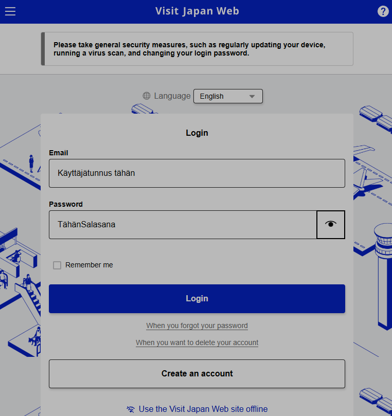
Koska minulla on jo käyttäjätili luotuna, syötin ensimmäiseen kenttään sähköpostiosoitteen ja alempaan salasanan. Jos sinulla ei vielä ole tiliä, valitse "Create an account", jolloin pääset luomaan käyttäjätilin.
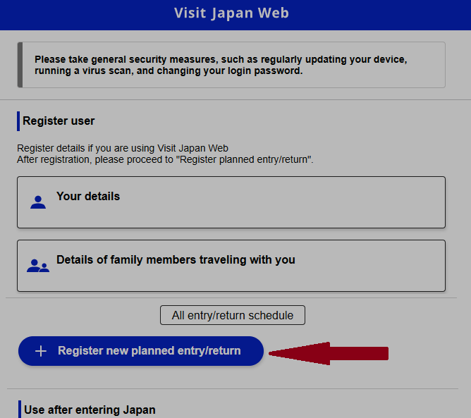
Ennen kuin tätä kannattaa alkaa täyttää, tulee lentoliput sekä vähintään ensimmäisen yön majoitus olla varattuna. Oletetaan siis, että ne ovat jo valmiina. Jatka valitsemalla "+ Register new planned entry/return".
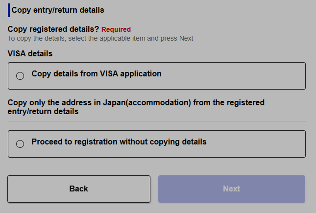
Jos sinulla on viisumi, onneksi olkoon! Itse en ole sellaista koskaan tarvinnut,
koska matkani ovat olleet alle 3 kuukautta kerrallaan. Jos sinulla on viisumi, valitse
ylempi vaihtoehto "Copy details from VISA application".
Jos olet tavallinen matkailija, valitse "Proceed to registration without copying
details". Tällä valinnalla pääset täyttämään kaikki lomakkeen kohdat.
Jos olet aiemmin täyttänyt lomakkeen ja käynyt Japanissa, voit halutessasi kopioida
aiemmat majoitustiedot, mikäli majoitut samaan paikkaan kuin aiemmin.
Valinnan jälkeen paina "Next".
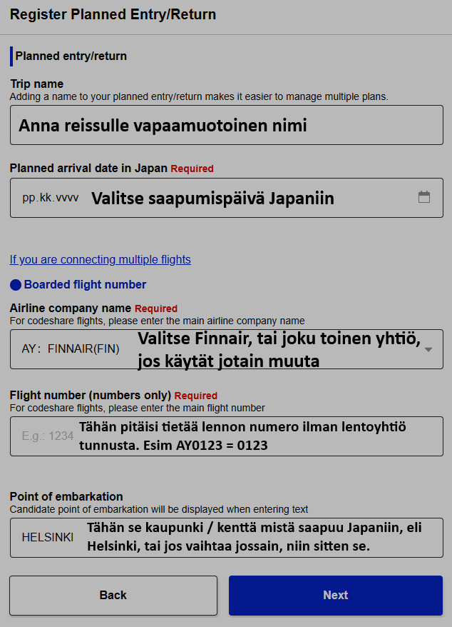
Tähän dokumenttiin täytetään lentotiedot
Olinkin jo merkinnyt kuvaan ne tiedot mitä tähän tulee lisätä, joten täyttäkää
lomake sen mukaan ja painakaa "Next".
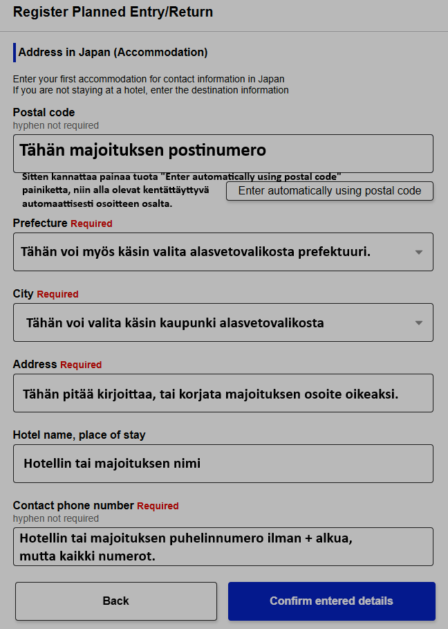
Tädän dokumenttiin täytetään majoitustiedot ensimäiseltä yöltä.
Olinkin jo merkinnyt kuvaan ne tiedot mitä tähän tulee lisätä, joten täyttäkää
lomake sen mukaan ja painakaa "Confirm entered details".
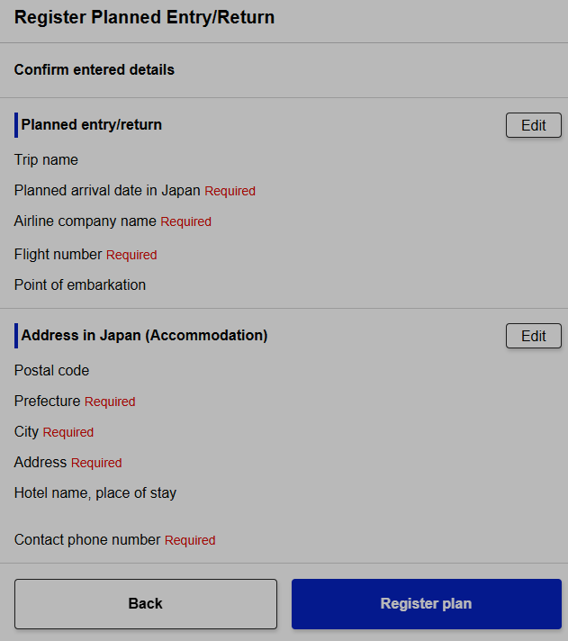
Tarkasta että tiedot mitkä lisäsit ovat oikein ja paina "Register plan".
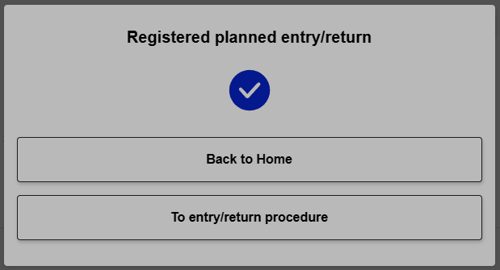
Tämässä valitaan halutaanko palata takasin etusivulle vai täytetäänkö maahantulokortti. Tässä ohjeessa oletetaan että halutaan täyttää myös maahantulokortti, joten tässä valitaan "To entry/return procedure".
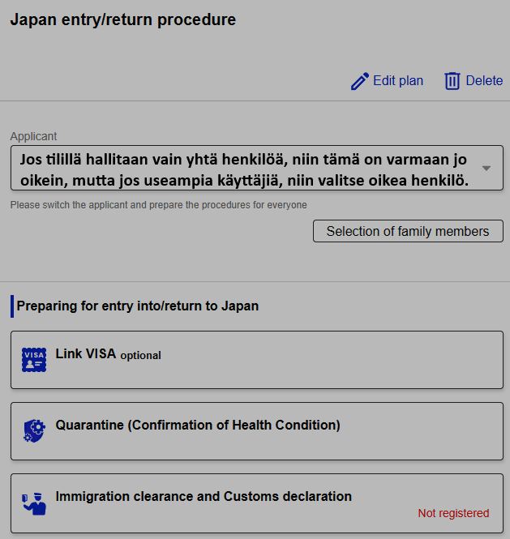
Jos sinulla on Japanin viisumi, ensimmäinen vaihtoehto on todennäköisesti oikea.
Jos olet tavallinen matkailija, valitse ensin "Quarantine (Confirmation of Health
Condition)"
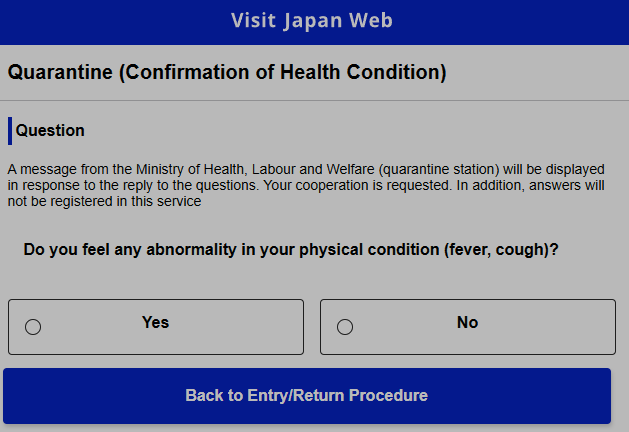
Ennen kuin valitset mitää, niin kannattaa ymmärtää mitä ilmoittaa, joten valitse terveydentilaasi vastaava valinta ja palaa sen jälkeen edelliselle sivulle "Back to Entry/return Procedure" painikkeella.
Seuraavaksi valitaan maahantuloon liittyvät dokumentit valitsemalla "Immigration clearance and Customs declaration".
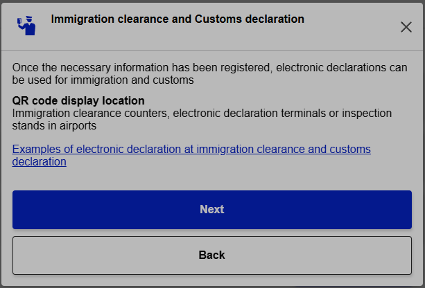
Lue ohjeet ja varmista, että ymmärrät tietojen tarkoituksen. Jatka painamalla "Next". Jos et hyväksy tai ymmärrä, palaa takaisin "Back" -painikkeella.
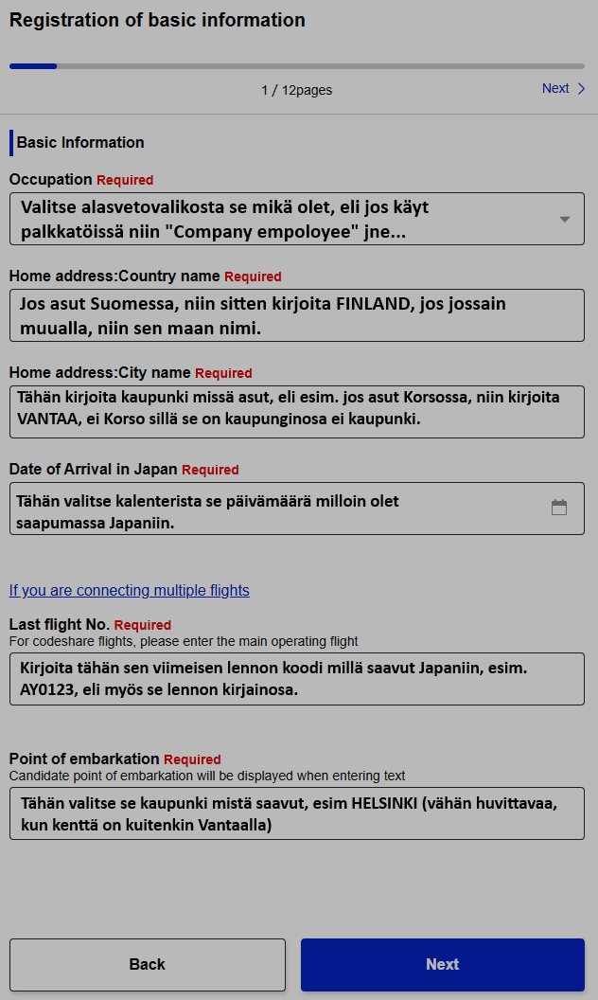
Tähän kaavakkeeseen täytetään omat- sekä matkustustiedot (Mahdollisesti valmiiksi kopioitunut edellisistä kaavakkeista). Kun kaavake on täytetty, niin paina "Next".
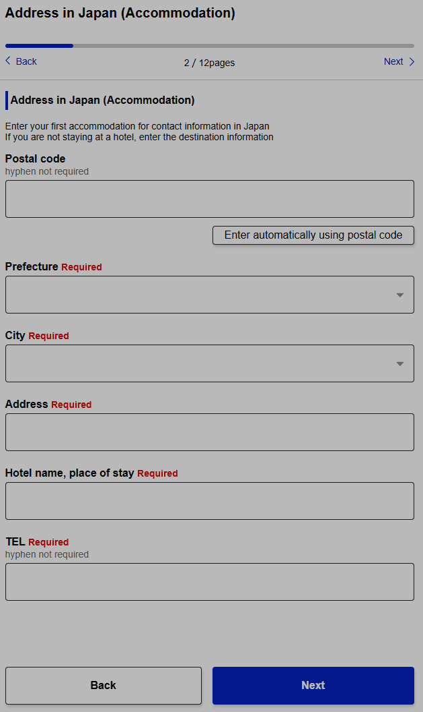
Tähän kaavakkeeseen täytetään majoitustiedot Japanissa (Mahdollisesti valmiiksi kopioitunut edellisistä kaavakkeista). Kun kaavake on täytetty, niin paina "Next".
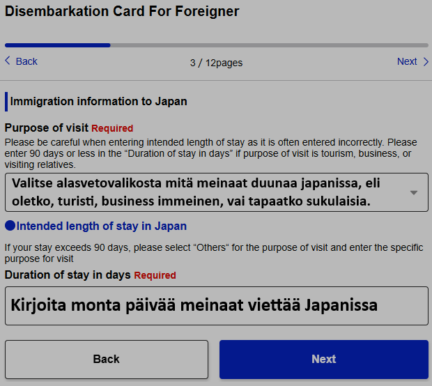
Tähän kaavakkeeseen täytetään matkan syy sekä monta päivää meinaa olella Japanissa. Kun kaavake on täytetty, niin paina "Next".
Sivut 4–9 ovat sen verran kriittisiä, etten käsittele niitä tarkemmin tässä
ohjeessa, vaan ne on jokaisen täytettävä itse ja ymmärrettävä huolellisesti.
Jos englannin kielitaito ei riitä kysymysten ymmärtämiseen, kannattaa pyytää apua tai
käyttää käännöspalvelua, kuten Google Translatea.
Vastaa kysymyksiin totuudenmukaisesti, sillä virheelliset tiedot voivat vaikuttaa
maahantulopäätökseen.
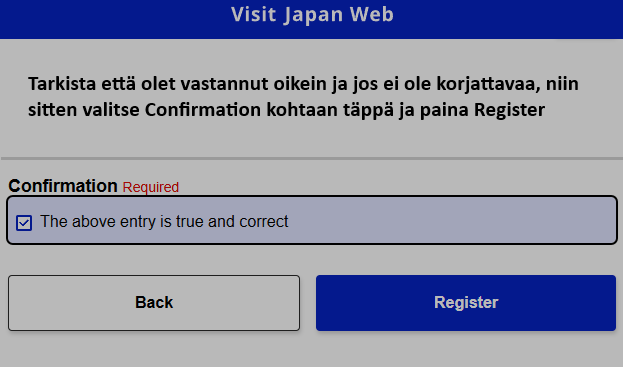
Tarkasta kaavake ja korjaa virheellinen tieto, mikäli sellaista ei ole paina "Register" painiketta.
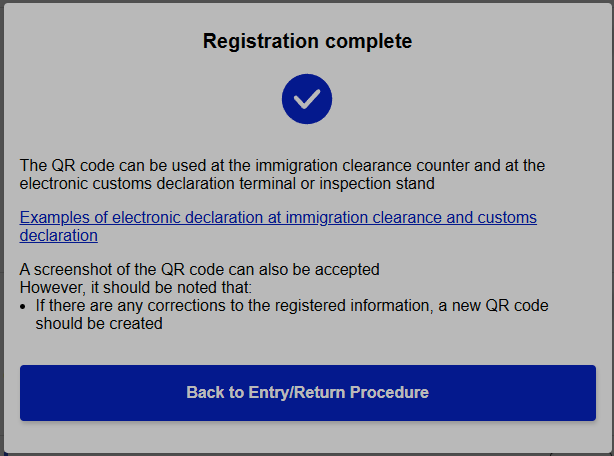
Onneksi olkoon olette onnistuneesti rekisteröinyt matkasi ja maahantulosi! Banzai! Sitten palaa takaisin painamalla "Back to Entry/return Procedure" painiketta.
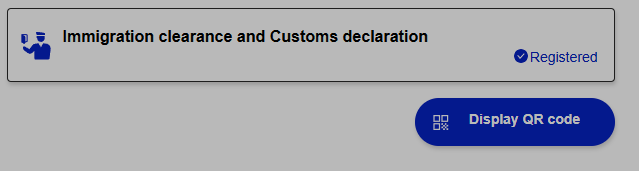
Nyt rekisteröinnin oikeassa laidassa näkyy hieno sininen ympyrä sisällä valkoinen v kirjain sekä Registered teksti, joten nyt pystyt aukaisemaan QR koodin valitsemalla "Display QR code"
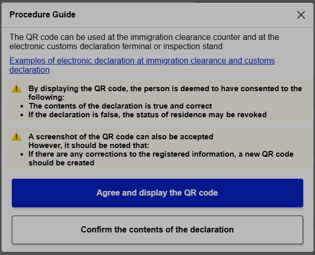
Lue vielä ehdot huolellisesti ennen hyväksymistä ja mikäli hyväksyt, niin paina "Agree and display the QR code" -painiketta.
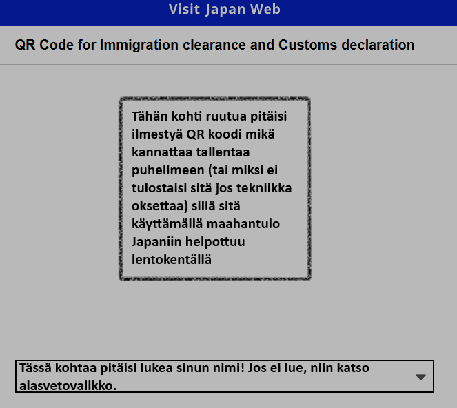
Onneksi olkoon – olet saanut rekisteröinnin valmiiksi. Tässä näkyvä QR-koodi nopeuttaa maahantuloa lentokentällä. Ilman sitä joudut täyttämään paperisen lomakkeen.